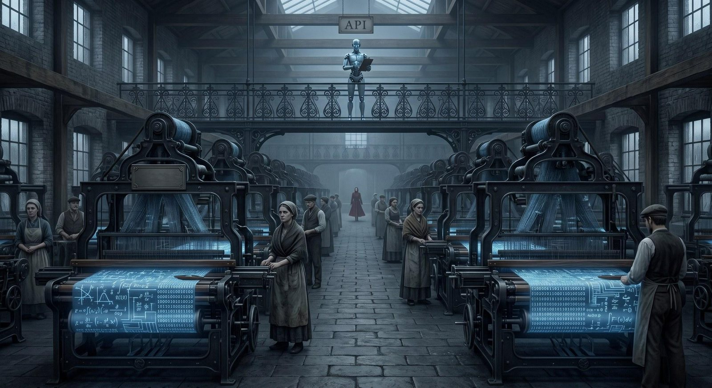
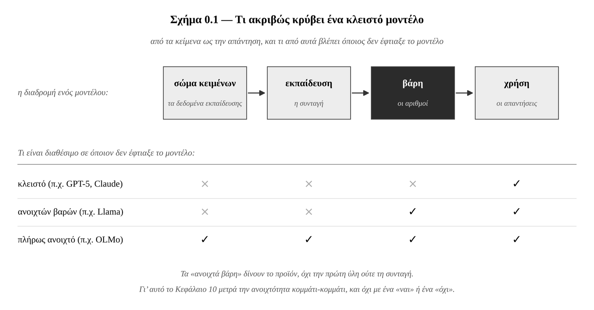
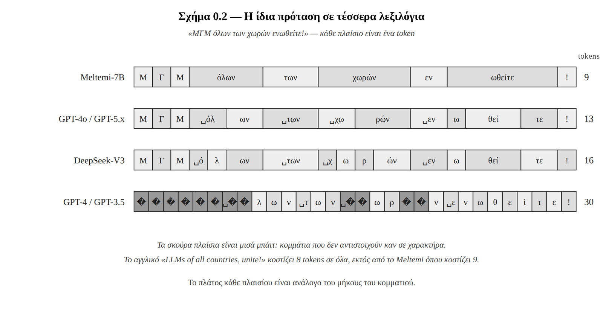
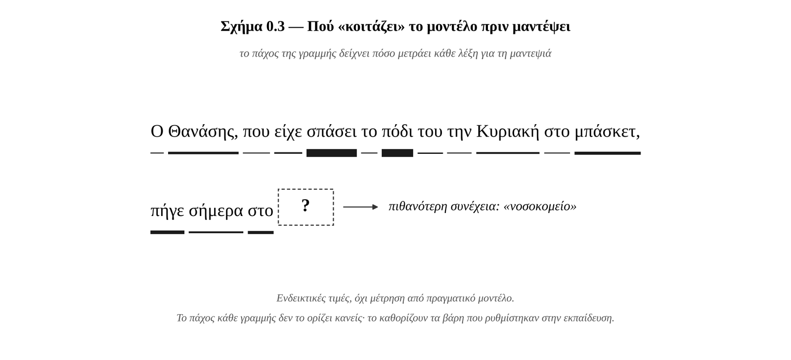
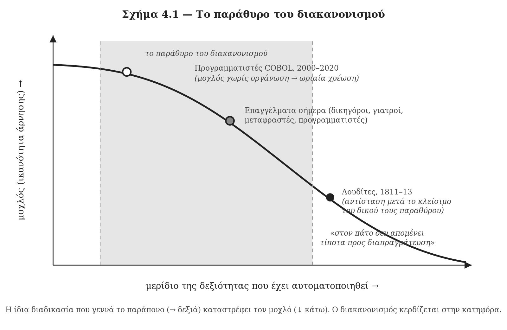
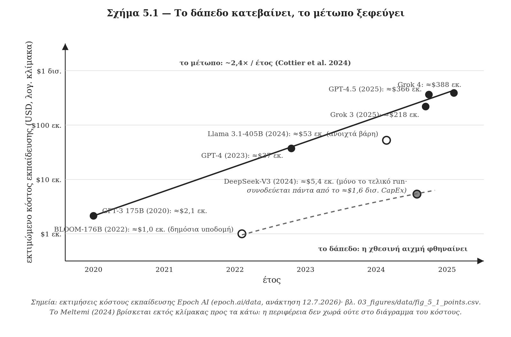
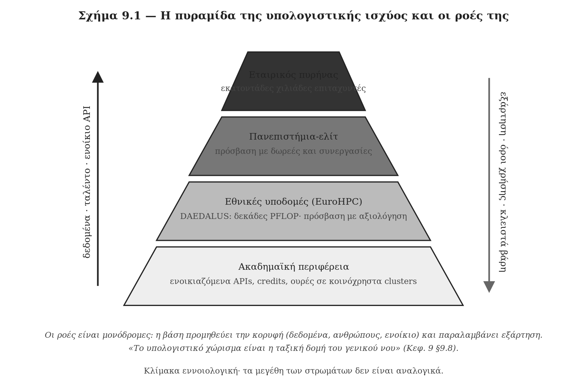
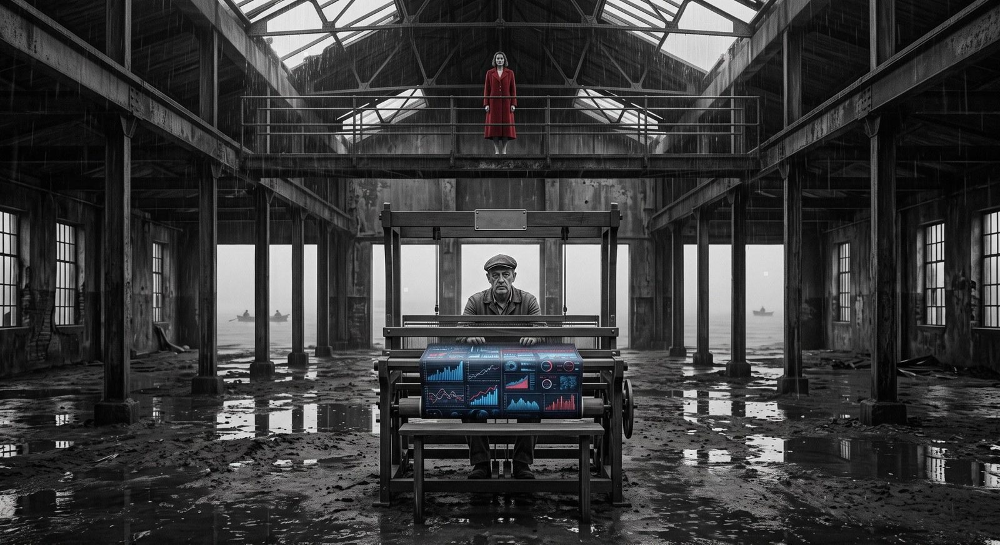

Εικόνες και σχήματα
Οι δύο εικόνες και τα έξι σχήματα του βιβλίου, με τη σειρά που εμφανίζονται.

Προμετωπίδα. Ο γενικός νους ως ύφασμα. Εικόνα παραγμένη με γενετικό μοντέλο.

Σχήμα 0.1. Τι ακριβώς κρύβει ένα κλειστό μοντέλο. Κεφάλαιο 0.

Σχήμα 0.2. Η ίδια πρόταση σε τέσσερα λεξιλόγια. Κεφάλαιο 0.

Σχήμα 0.3. Πού «κοιτάζει» το μοντέλο πριν μαντέψει. Κεφάλαιο 0.

Σχήμα 4.1. Το παράθυρο του διακανονισμού. Κεφάλαιο 4.

Σχήμα 5.1. Το δάπεδο κατεβαίνει, το μέτωπο ξεφεύγει (σημεία: εκτιμήσεις Epoch AI, 12.7.2026). Κεφάλαιο 5.

Σχήμα 9.1. Η πυραμίδα της υπολογιστικής ισχύος. Κεφάλαιο 9.

Κατακλείδα. «Στον πάτο δεν απομένει τίποτα προς διαπραγμάτευση.» Εικόνα παραγμένη με γενετικό μοντέλο.